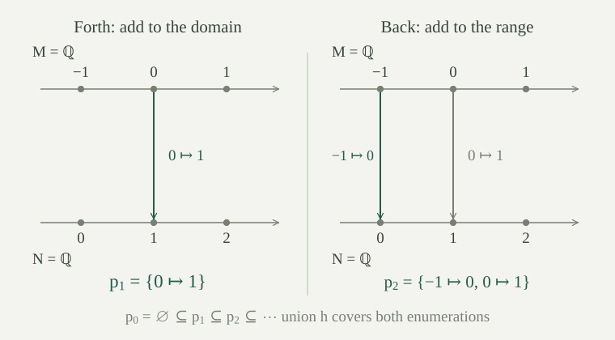

Fix nonempty structures \(M,N\) in the same language \(L\). A finite partial isomorphism from \(M\) to \(N\) is a bijection \(p:A\to B\), where \(A\subseteq |M|\) and \(B\subseteq |N|\) are finite, such that for every atomic formula \(\theta(x_0,\ldots,x_{r-1})\) and tuple \(\bar a\in A^r\),
Atomic formulas include equalities between terms and relations applied to terms. Those terms are evaluated in the ambient structures. The finite sets \(A,B\) need not be closed under functions or contain the constants, so they need not be substructures. In a language consisting of one binary relation, the condition says exactly that the finite bijection preserves and reflects that relation.
Write \(\operatorname{dom}(p)=A\) and \(\operatorname{ran}(p)=B\). A map \(q\) extends \(p\), written \(p\subseteq q\), when its graph contains the graph of \(p\). Thus every value already assigned remains fixed.
For a systematic study of the finite induced structures occurring inside one structure, see its age.
A finite partial isomorphism preserves and reflects every quantifier-free formula on tuples from its domain.
Atomic formulas agree by definition. Negation, conjunction and the other Boolean connectives preserve agreement by induction on the formula. Quantifiers are excluded: their witnesses need not lie in the finite domain.
The empty tuple is included in the definition. Consequently any partial isomorphism, even one with empty domain, requires agreement on closed atomic formulas. For example, if the language has constants \(c,d\), then \(c=d\) must have the same truth value in both structures. One cannot assume that the empty map is always available.
A back-and-forth system between \(M,N\) is a nonempty family \(\mathcal I\) of finite partial isomorphisms satisfying both conditions:
The extension may add several pairs. If the requested element is already present, \(q=p\) is allowed. Forth will make the eventual map defined everywhere; back will make it onto. We work in ordinary set theory with choice when selecting extensions.
Suppose \(p_0\subseteq p_1\subseteq\cdots\) are finite partial isomorphisms, their domains cover \(|M|\), and their ranges cover \(|N|\). Then \(h=\bigcup_{n<\omega}p_n\) is an isomorphism from \(M\) onto \(N\), extending every \(p_n\).
Extension makes the union a function. Domain coverage makes it total. Any two arguments occur together in one stage, so injectivity of that stage gives injectivity of \(h\). Range coverage gives surjectivity.
Every finite tuple lies in the domain of one stage, by taking the maximum of its finitely many stage indices. Atomic formulas therefore agree on that tuple. For a relation symbol, use its atomic formula on variables. For a function symbol \(f\), include both \(\bar a\) and \(f^M(\bar a)\) in the tuple, then apply agreement to \(y=f(\bar x)\). It follows that
The same argument covers constants, whose arity is zero. Relations of arity zero agree using the empty tuple. Hence the bijection preserves all interpretations and is an isomorphism.
If the carriers of \(M,N\) are countable and a back-and-forth system \(\mathcal I\) exists between them, every \(p\in\mathcal I\) extends to an isomorphism \(M\cong N\). No countability assumption on the language is needed.
List the carriers as \(a_0,a_1,\ldots\) and \(b_0,b_1,\ldots\), allowing repetitions when a carrier is finite. Start from the prescribed \(p_0=p\). Given \(p_{2n}\), use forth to choose \(p_{2n+1}\) extending it with \(a_n\) in its domain. Then use back to choose \(p_{2n+2}\) extending that map with \(b_n\) in its range. The resulting increasing sequence covers both carriers. Apply .
The order of these requests matters: answering only requests from \(M\) does not ensure that every element of \(N\) is reached.
For finite elementary maps in arbitrary first-order languages, see how saturation supplies the extension requirements and the resulting specified-map isomorphism theorem.
For a finite relational language and a fixed number of extension requests, the Ehrenfeucht–Fraïssé theorem identifies the formulas that such finite matches preserve. Its finite-round condition does not require a single family that can answer arbitrarily many requests.
Let \(M,N\) be nonempty dense linear orders without endpoints, in the language with just \(<\). Their finite order isomorphisms form a back-and-forth system. Consequently any two countable such orders are isomorphic.
The empty map is available because this language has no closed atomic formulas. For forth, take a point \(a\) outside the finite domain of \(p\). Divide that domain into the points below and above \(a\). If both parts are nonempty, let \(u\) be the greatest point in the lower part and \(v\) the least in the upper part. Choose \(b\) strictly between \(p(u)\) and \(p(v)\). If only the lower part is nonempty, choose \(b\) above its greatest image; if only the upper part is nonempty, choose \(b\) below its least image. If the domain is empty, choose any \(b\in |N|\). Density and the absence of endpoints supply these choices.
In each case \(b\) is outside the old range, and adjoining \(a\mapsto b\) preserves the order. Interchange the two orders and apply the same argument to the inverse finite bijection to obtain back. Now use . This is the general form of the dense-order back-and-forth proof.

Finite order isomorphisms between \((\mathbb Q,<)\) and \((\mathbb R,<)\) satisfy both extension conditions. Why does the theorem not give an isomorphism between them?
The real carrier is uncountable, so a sequence of requests cannot list every real number. A union of countably many finite maps has countable domain and range. The extension conditions allow each separate finite request to be answered; they do not allow all real numbers to be covered in countably many stages. No isomorphism can exist because it would be a bijection from a countable set to an uncountable one.
For an infinite cardinal \(\kappa\), a theory \(T\) is \(\kappa\)-categorical if any two of its models of cardinality \(\kappa\) are isomorphic. We state existence separately when it matters; some authors include the existence of such a model in the definition. Thus countable categoricity here means uniqueness for countably infinite models, at cardinality \(\aleph_0\).
The theory of dense linear orders without endpoints is countably categorical by , and has a countably infinite model \((\mathbb Q,<)\). Categoricity concerns isomorphisms. A complete theory instead requires a common answer to every sentence; these are different requirements.
Let \(L\) be countable and \(T\) a satisfiable \(L\)-theory with no finite models. If \(T\) is countably categorical, then \(T\) is complete.
Take any two models \(M,N\models T\). By downward Löwenheim–Skolem, choose countable elementary substructures \(M_0\preccurlyeq M\) and \(N_0\preccurlyeq N\). They satisfy \(T\), so the no-finite-model assumption makes them countably infinite. Categoricity gives \(M_0\cong N_0\). Elementarity and isomorphism invariance show that \(M,N\) agree on every sentence. By the model criterion for completeness, \(T\) is complete.
Dense linear orders without endpoints have no finite models: starting from any point, repeatedly choose a larger one to obtain arbitrarily many distinct points. The criterion therefore gives another proof that their theory is complete, alongside the quantifier-elimination argument.
Can the no-finite-model assumption be replaced by the existence of at least one infinite model?
No. Take the empty theory in the language with equality alone. Its models are arbitrary nonempty sets. Any two countably infinite models are isomorphic because a bijection preserves equality, so the theory is countably categorical and has infinite models. Yet the sentence \(\forall x\,\forall y\;(x=y)\) is true in a one-element model and false in a two-element model. Thus the theory is incomplete.